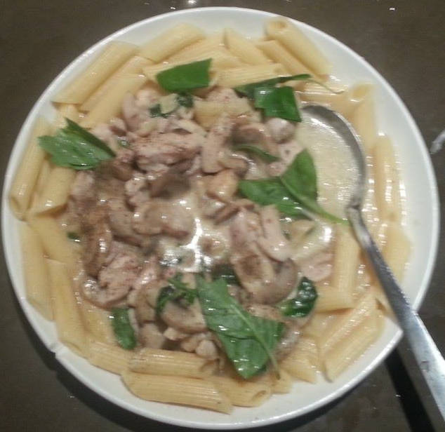

How to avoid Repeated Strain Injury when using emacs by re-assigning hotkeys
I've read all the Emacs RSI related articles from the internet.
Typical solutions are:
- buy special hardware
- remap ctrl key (because Emacs users press Ctrl key too often)
- use Vi key binding
- other Emacs keybinding with some hacking
- voice input
I will discuss the third item "use Vim key binding" because there is still room to improve.
Here is my observation. Even I use Vi keybinding, there are top three frequently pressed keys which may hurt my left hand: ESC, C-x, C-g
These top three need me move my left hands too often. That may be the problem of RSI. In this case, A little knowledge of Vim will help.
In vi, we use key combination start with <leader> key. The leader key is actually the comma key ,.
As you can see, comma key is close to the right hand fingers. So using key combination with leader key as the first key to press will give more spare hot keys to replace ESC, C-x and C-g.
The principle here is DO NOT move hands at all. Following this example, I can figure out many practical solution.
For example, by using Evil and evil-leader. With hot key prefix C-x, I use ,x to replace. For example, C-x C-c is replaced with ,xc,
(require 'evil-leader)
(evil-leader/set-key
"xf" 'ido-find-file
"xb" 'ido-switch-buffer
"xc" 'save-buffers-kill-terminal
"jj" 'w3mext-search-js-api-mdn
"xz" 'suspend-frame
"xvv" 'vc-next-action
"xv=" 'vc-diff
"xvl" 'vc-print-log)
On some keyboard, the Alt key is easy to press because it's big and just under the big thumb. So I can assign some key combination like M-k to replace C-g.
Please note Alt and k is also close to my fingers. Here is my setup in .emacs:
(global-set-key (kbd "M-k") 'keyboard-quit)
(define-key evil-insert-state-map (kbd "M-k") 'evil-normal-state)
(define-key evil-visual-state-map (kbd ",k") 'evil-exit-visual-state)
(define-key minibuffer-local-map (kbd ",k") 'abort-recursive-edit)
(define-key evil-insert-state-map (kbd "M-j") 'yas-expand)
Some minor modes will re-assign the hot key C-g, so when I say replace C-g with ,k. It may be a bit more elisp code:
;; the original hot key of helm-keyboard-quit is "C-g"
(define-key helm-map (kbd ",k") 'helm-keyboard-quit)
The key point is to understand the principles instead copy my configuration:
- comma is a good key for hot key prefix, it's used by vi users for ages
- use keys close to fingers (L,J,K,L, for example) in hot keys
- Other keys close to right hand is also useful in key combinations
- Avoid move left hand
How to get email from exchange server without Outlook
This article has three parts.
First part explains setup of mail gateway DavMail for Exchange server.
Second part uses thunderbird to fetch mails from Davmail.
Third part uses Emacs and Gnus to replace thunderbird. It's optional.
DavMail as mail gateway
Ever wanted to get rid of Outlook ? DavMail is a POP/IMAP/SMTP/Caldav/Carddav/LDAP exchange gateway allowing users to use any mail/calendar client (e.g. Thunderbird with Lightning or Apple iCal) with an Exchange server.
Install
Download the installer at Debian/Ubuntu/Mint:
sudo apt-get install libswt-gtk-3-jni libswt-gtk-3-java libswt-cairo-gtk-3-jni
# ubuntu/debian only; for other distribution, just download src package
sudo dpkg -i davmail_4.5.1-2303-1_all.deb
Installation is easy. DavMail by itself is a portable java application. Since its GUI is dependent on SWT. So I give the instruction on how to install SWT in ubuntu. If you don't use ubuntu, then you are already technically good enough to know how to install SWT.
Configuration
Now start DavMail.
Please input the web Outlook url like "https://webmail.mycompany.com.au/owa/" in its GUI.
By default all the services are NOT encrypted. It makes sense because email client and gateway are at the same computer.
Write down the port numbers. In my case, I need port number of IMAP/POP3/SMTP.
That's all you need to do unless DavMail can't detect your Exchange server automatically!
If Exchange server uses un-conventional EWS URL, you need find the URL manually with EWSEditor.
For example, my EWS URL is https://my-company.local/EWS/Exchange.asmx. In DavMail, input that URL in "Main -> OWA (Exchange) URL" and force the "Exchange Protocol" into "EWS".
BTW, https://outlook.office365.com/ EWS URL is https://outlook.office365.com/EWS/Exchange.asmx.
Thunderbird
Create a new account, and manually configure the server. The server name is "127.0.0.1", the port number is already on your paper. The minimum setup needs IMAP port to receive mail and SMTP port to send email.
You don't need care about ssl stuff, let thunderbird handle it. But if you get the error message like "BAD command authentication required" in davmail's log, modify setup in "Account Settings -> Server Settings -> Security Settings -> Connection Settings". Select "None".
The only issue is the "Username". You can log in Outlook Web UI, click "Options -> Change Password". The user name is displayed above the first input box. Please note the full user name may include the work domain.
Emacs Gnus
Gnus cannot access IMAP service of DavMail. There is some bug.
So we have to turn to POP3. Check documentation at EmacsWiki.
If you use POP3, don NOT delete mails on server. You must set the variable "pop3-leave-mail-on-server" to true!
Insert below code into your ~/.emacs:
;; gnus+davmail bug, so I have to use pop3 for DavMail
;; http://permalink.gmane.org/gmane.emacs.gnus.general/83301
;; but delete all the mails on server is scary
(setq pop3-leave-mail-on-server t)
(add-to-list 'gnus-secondary-select-methods '(nnml "mycompany"))
(setq mail-sources
'((pop :server "127.0.0.1" ;; DavMail is running at localhost
:port 1110
:user "username"
:password "password"
:stream network))) ;; by default, DavMail don't encrypt mail
Since I've got many mails in INBOX folder, POP3 could take some time to get them. In worst cases, IT administrator may block DavMail access because it relay too many requests from Gnus! The solution is to use another IMAP client like thunderbird to clean up the INBOX folder before start Gnus.
Another tip is when opening a folder in Gnus, press C-u ENTER instead of ENTER key. C-u here means display all the read and unread mails. It's awkward when product manager ask you open an important mail but that mail is invisible because it's marked READ. Check my article Practical guide to use Gnus with Gmail for more tips.
青椒炒鸡肉作法
这里是菜谱.
鸡腿肉430克，青椒3个，盐2茶匙，生抽3茶匙，糖1茶匙，芝麻油1茶匙，生粉1汤匙，料酒1汤匙，老干妈辣椒碎1汤匙（可选），蒜头2瓣切碎，植物油3汤匙，盐适量调味用 1.鸡肉切成小块，然后用盐、生抽、糖、麻油、生粉、料酒腌15分钟左右。青椒去籽切块。 2.大火下一半的油和一半的蒜末，爆香蒜末之后，加入鸡肉炒，炒至8成熟的时候，盛起。 3.把剩下的油和蒜末放在锅里爆香，然后放入青椒块，炒至青椒颜色变深开始变软的时候加入鸡肉一块炒。如喜欢有点辣，可撒上老干妈辣椒碎一块炒，炒熟青椒和鸡以后，最后撒适量的盐调味即成。
- 开大火鸡肉炒两到三分钟
- 炒青椒时如决定加干辣椒,应先炸干辣椒,否则辣味出不来
- 青椒加入鸡肉后1或者2分钟就可以了
- 最后加点盐,可能会淡点
The power of git command line interface
Examples about how to use git CLI.
You need install beautiful percol developed by mooz by run pip install percol.
percol "adds flavor of interactive filtering to the traditional pipe concept of UNIX shell".
Append below code into ~/.bashrc and run source ~/.bashrc:
function gurl () {
if [ -z "$1" ]; then
echo "Usage: gurl commit-id"
echo "get the full http url of commit"
else
local msg=`git remote -v|grep "origin\s\+.*\s\+(fetch)"|sed -e "s/origin\s\+\(.*\)\s\+(fetch)/\1/"`
local url=""
# github
if [ "${msg:0:14}" == "git@github.com" ]; then
echo https://github.com/`echo ${msg}|sed -e "s/^git\@github\.com\:\(.*\)\.git$/\1/"`/commit/$1
fi
fi
}
# pick commit id from `git log`
function gcid () {
local commit_id=`git log --pretty=format:'%h %ad %s (%an)' --date=short|percol|sed -e"s/^\([a-z0-9]\+\)\s\+.*$/\1/"`
echo ${commit_id}
}
#pick commit from `git log` and output its url
function gqurl () {
local commit_id=`git log --pretty=format:'%h %ad %s (%an)' --date=short|percol|sed -e"s/^\([a-z0-9]\+\)\s\+.*$/\1/"`
gurl ${commit_id}
}
Now you have three bash functions gurl, gcid, gqurl.
Here is demo how to use gcid:

Here is demo of gqurl:

BTW, I use CLI clipboard tool like xsel. For example, "echo hello|xsel -ib" which insert string "hello" into system clipboard.
so I can git show `gcid`|xsel -ib to copy/paste the code of specific commit between terminal and firefox.
Australia food brands
| category | producer | best product | website |
|---|---|---|---|
| icecream | Weis | mango icecream | http://www.weis.com.au/ |
| cereals | Kellogg | Wholegrain cereals | http://www.kelloggs.com.au |
Find which package contains a file
dpkg --search /usr/bin/amidi # debian/ubuntu, local search
apt-file update;apt-file search amidi # debian/ubuntu, remote seach. You need install apt-file at first.
equery b -e amidi # gentoo, remote/local search. You need install gentoolkits at first
pacman -Qo admidi # archlinux, local search
pkgfile amidi # archlinux, You need install pkgfile
奶油鲍鱼菇
材料：
鮑魚菇300公克、洋地瓜200公克、樹子50公克、薑末10公克、香菜10公克、麵粉30公克。
調味料：
醬油2大匙、蘋果淳1大匙、香油1大匙、糖1/2小匙、黑胡椒粒1/2小匙。
作法：
鮑魚菇切花刀、洋地瓜切成末、香菜切末，備用。
鮑魚菇沾上麵粉放入鍋中煎至上色，備用。
鍋中放入1大匙葡萄籽油，爆香洋地瓜、樹子、薑末放入鮑魚菇、調味料燒至入味，灑上香菜即可盛盤。
- 我误用红薯代替了洋地瓜.洋地瓜又名豆薯,见Wiki.
- 菇应该煎得焦一点
- 红薯本身甜的，加苹果醋和糖后就过甜了.而洋地瓜则是淡的,可能口感上也好一点
- 生姜尽可能切碎
- 面粉应该一开始放在干燥的碗里,面粉本身不结块,用生粉代替不好
- 黑胡椒粒还是需要的
- 香菜保持干燥包好隔绝空气放到冰箱保存
- 树子是台湾特产,在悉尼可能只能买罐头了，见这道菜谱.
- 酱油好像放了多一点
- 不过再视频里一大勺实际上是满满两勺

蘑菇鸡肉意大利面做法
- 大蒜15片切碎，橄榄油炸到焦黄
- 蘑菇倒入翻炒到软掉
- 倒入鸡肉块300克炒至鸡肉变白
- 倒入Five Brother Alfredo Pasta Sauce 220克加少量水
- 又有说小火炒5分钟,偶尔翻炒,到浆粘稠，不要沸腾
- 参考Fettuccine Alfredo at wikipedia获得背景，看来要加大量黄油和Cheese
- 看另一菜谱
- 盐要少加一点调味,因为sauce以有盐
- 起锅拌上熟意大利面，加九层塔(Basil),撒上黑胡椒
- 大概三人份
